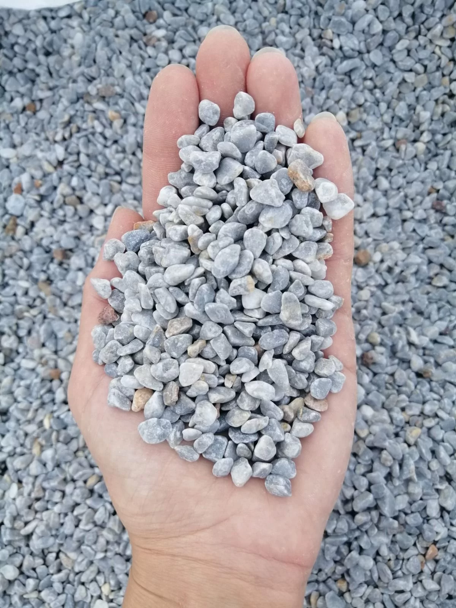
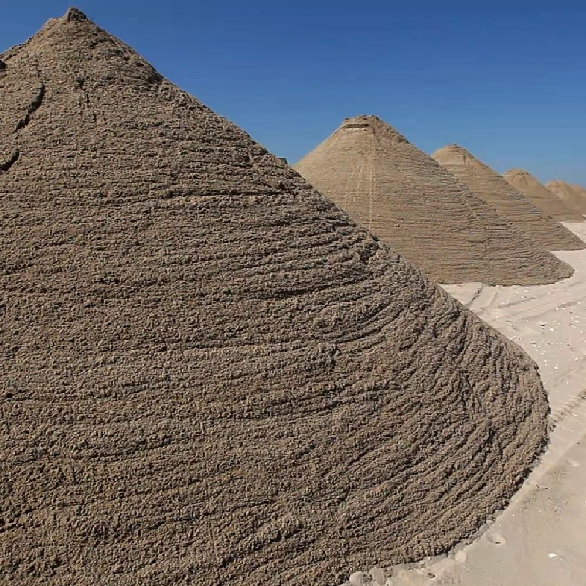
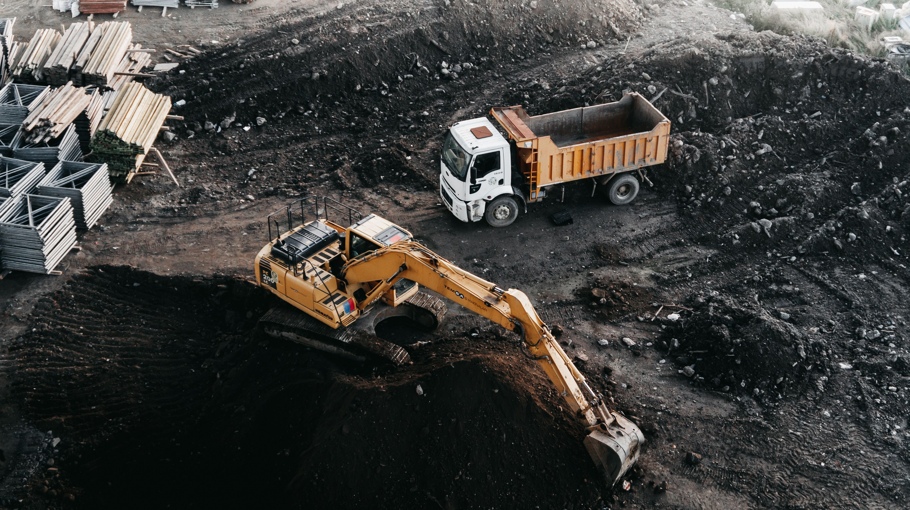
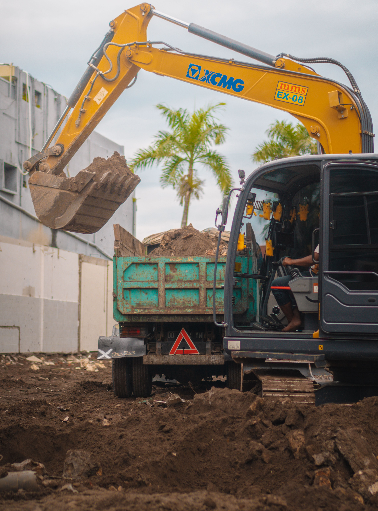
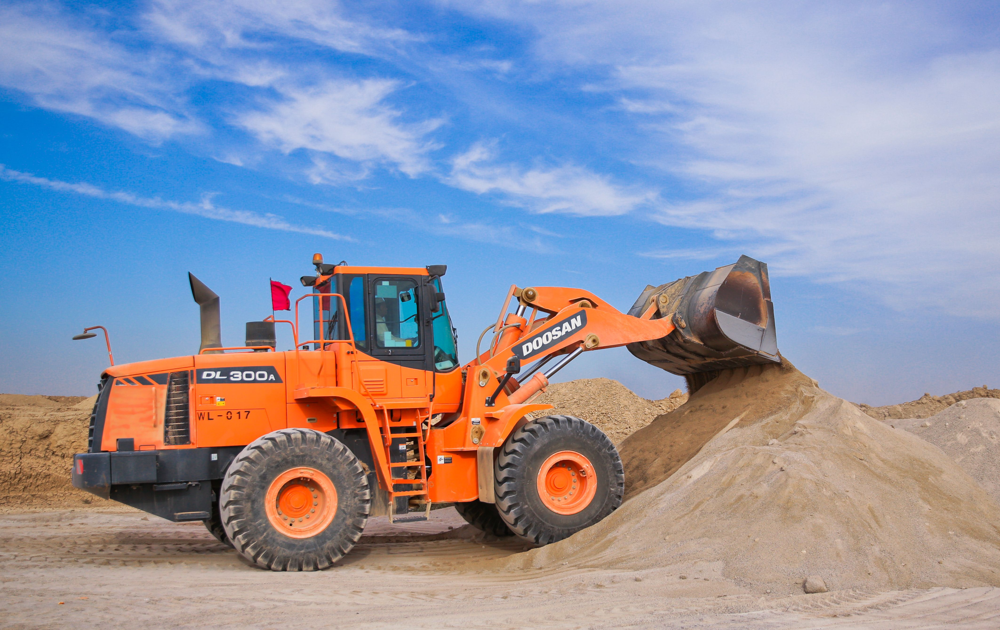
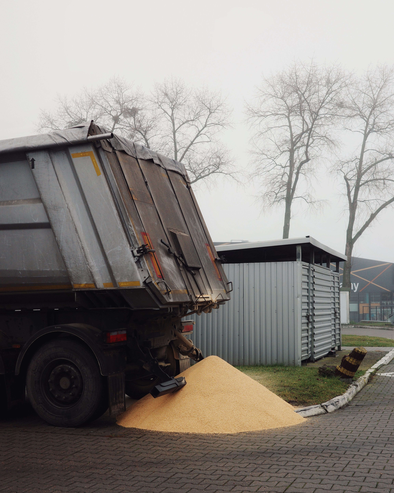

Firmamız, mıcır ve kum satışı alanında uzun yıllardır faaliyet göstermekte olup inşaat, altyapı, yol yapımı ve beton üretimi gibi birçok sektöre hizmet vermektedir.
Kaliteli mıcır, elenmiş kum ve inşaat malzemeleri tedarik ederek projelerin ihtiyaç duyduğu dayanıklı ve güvenilir ürünleri sunuyoruz. Mıcır ve kum satışı konusunda uygun fiyat politikamız ve hızlı teslimat anlayışımız ile müşterilerimize çözüm odaklı hizmet vermekteyiz.
Samsun ve çevresinde mıcır ve kum temini konusunda güvenilir bir tedarikçi olarak, küçük ölçekli projelerden büyük şantiye çalışmalarına kadar her ölçekte hizmet sağlamaktayız.
Müşteri memnuniyetini ön planda tutarak, kaliteli ürün ve zamanında teslimat prensibi ile sektörde güçlü bir konumda ilerlemekteyiz.
Mıcır ve kum satışı hizmetlerimiz mevcuttur.

Fiyat: 150 ₺ / ton

Fiyat: 180 ₺ / ton
Mıcır, doğal taşların kırılmasıyla elde edilen küçük taş parçalarından oluşan bir yapı malzemesidir. İnşaat sektöründe yaygın olarak kullanılır ve farklı tane boyutlarına sahip olabilir.
En çok yol yapımı, beton üretimi, drenaj sistemleri ve zemin güçlendirme çalışmalarında tercih edilir. Dayanıklı yapısı sayesinde uzun ömürlü altyapı sağlar.
Kum, kayaların zamanla aşınmasıyla oluşan ince taneli doğal bir malzemedir. İnşaat sektörünün en temel yapı taşlarından biridir.
İnce ve kalın olmak üzere farklı türleri vardır. Beton, harç ve sıva işlerinde vazgeçilmezdir.
Mıcır daha büyük kırma taşlardan oluşurken kum çok daha ince tanelidir. Kullanım alanları da buna göre farklılık gösterir.
Kullanılan kum ve mıcırın kalitesi, yapılan yapının ömrünü doğrudan etkiler. Kalitesiz malzeme zamanla çatlaklara, çökmelere ve dayanım kaybına yol açabilir.




Adres: Örnek Mah. Örnek Sok. No:1, İstanbul, Türkiye
Email: info@micirkum.com
Telefon: +90 123 456 78 90